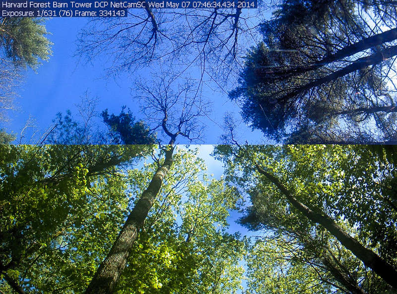

4 Phenology trends
4.1 Introduction
Phenology is broadly defined as seasonally recurring life cycle events, ranging from migration to seasonal plant growth. Land surface phenology is a first order control on the exchange of water and energy between the biosphere and atmosphere (Cleland et al. 2007; Lieth 2013; Piao et al. 2019; Andrew D. Richardson et al. 2010). As such it is an indicator of climate change (Peñuelas and Filella 2009). Plant phenology has historically been recorded for many centuries (Menzel and Dose 2005). More recently plant phenology (and its changes) have been recorded by networks of observers (Crimmins et al. 2017), near-surface cameras (Andrew D. Richardson 2018; Andrew D. Richardson et al. 2018) and not in the least by global satellite monitoring (Zhang et al. 2003; Ganguly et al. 2010).
All these (remote sensing) measurements have provided us with insights in how climate change has altered plant phenology. Overall, climate change moves phenology forward (from spring toward winter) at a rate of ~ 1 - 5 days per decade, with rates varying depending on locality and altitude (Wang et al. 2015; Vitasse et al. 2009; Menzel et al. 2006).
Consequences are many, such as exposing early blooming or leafing plants to increased frosts risks and carbon losses through an explicit opportunity cost (Hufkens, Friedl, Keenan, et al. 2012; Augspurger 2013; Gu et al. 2008). In short, changes to plant and land surface phenology have a profound effect on both the carbon balance and all (co-) dependent processes (Hufkens, Friedl, Keenan, et al. 2012). Therefore, it is key that we can quantify how phenology changes in response to year-to-year variability, climate change and global heating (Andrew D. Richardson et al. 2010; Peñuelas and Filella 2009).
Remote sensing products provide these insights for almost four decades (Zhang et al. 2003; Hufkens, Friedl, Sonnentag, et al. 2012). Remote sensing, and land surface phenology products they produce have a number of advantages. They provide wall-to-wall coverage, with relative consistency and known (methodological) biases. I will cover several aspects of developing a small research project using the remote sensing of phenology as it’s basis, using small data sets (a handfull of pixels).
In this chapter (Chapter 4) I will highlight how to detect landscape wide trends in phenology and how they relate to physical geography. This knowledge can then be used to infer some broad, cross-cutting, properties of vegetation phenology. In Chapter 5 I will demonstrate how you can detect phenology from vegetation time series yourself, using a simple algorithm, and scale this regionally and globally.
Now, let’s get started!
4.2 Getting the required data
Our first forays into phenology research will require both topography and phenology data. If we want to download topographic data to quantify the influence of topography on phenology. Various sources can be found online but the easiest is to use the geodata package which provides a way to access Shuttle Radar Topography Mission (SRTM) elevation data easily.
# load libraries
library(geodata)
# download SRTM data
geodata::elevation_3s(
lat = 46.6756,
lon = 7.85480,
path = tempdir()
)
# read the downloaded data
# use file.path() to combine
# a directory path with a filename
dem <- terra::rast(
file.path(
tempdir(),
"srtm_38_03.tif"
)
)In this exercise I will rely on the MODIS land surface phenology product. This remote sensing based data product quantifies land surface phenology and is a good trade-off between data coverage (global) and precision (on a landscape scale).
To gather this data I will use the MODISTools package. For an in depth discussion on gathering data using APIs and this API in particular I refer to Chapter 2.
# load libraries
library(MODISTools)
# download and save phenology data
phenology <- MODISTools::mt_subset(
product = "MCD12Q2",
lat = 46.6756,
lon = 7.85480,
band = "Greenup.Num_Modes_01",
start = "2012-01-01",
end = "2012-12-31",
km_lr = 100,
km_ab = 100,
site_name = "swiss",
internal = TRUE,
progress = FALSE
)
Note
It is always important to understand the data products you use. Find information on who produced the product, track down the latest literature in this respect and note what the limitations of the product are.
- What does the band name stand for (mathematically)?
- How does this relate to other bands within this product?
- What are the characteristics of the downloaded data?
- is post-processing required?
Write down all these aspects into any report (or code) you create to insure reproducibility.
The downloaded phenology data and the topography data need post-processing in our analysis. There are a number of reasons for this:
- MODIS data comes as a tidy data frame
- MODIS data might have missing values
- DEM data extent is larger than MODIS coverage
- Two non-matching grids (DEM ~ MODIS)
Given that data downloaded using MODISTools is formatted as tidy data we can change corrupt or missing values into a consistent format. In the case of the MCD12Q2 product all values larger than 32665 can be classified as NA (not available).
The documentation of the product also shows that phenology metrics are dates as days counted from January 1st 1970. In order to ease interpretation we will convert these integer values, counted from 1970, to day-of-year values (using as.Date() and format()). We only consider phenological events in the first 200 days of the year, as we focus on spring. Later dates are most likely spurious.
# screening of data
phenology <- phenology |>
mutate(
value = ifelse(value > 32656, NA, value),
value = as.numeric(format(as.Date("1970-01-01") + value, "%j")),
value = ifelse (value < 200, value, NA)
)Both datasets, the DEM and MODIS data, come in two different data formats. For the ease of computation we convert the tidy data to a geospatial (terra SpatRast) format.
phenology_raster <- MODISTools::mt_to_terra(
phenology,
reproject = TRUE
)Code
ggplot() +
tidyterra::geom_spatraster(data = phenology_raster) +
scale_fill_viridis_c(
na.value = NA,
name = "DOY"
) +
theme_bw()We can now compare both data sets in a spatially explicit way, e.g. compute overlap, reproject or resample data. For example, to limit computational time it is often wise to restrict the region of interest to an overlapping section between both data sets. This allows data to be as large as required but as small as possible. We therefore crop the DEM data to correspond to the size of the coverage of the MODIS phenology data.
# crop the dem
dem <- terra::crop(
x = dem,
y = phenology_raster
)The grid of the DEM and MODIS data do not align and so resampling of the data is required. We use the highest resolution data for this resampling, taking the average across the extent of a MODIS pixel.
# resample the dem using
# the mean DEM value in a
# MODIS pixel
dem <- terra::resample(
x = dem,
y = phenology_raster,
method = "average"
)
# mask the locations which
# have no data
dem <- terra::mask(
dem,
is.na(phenology_raster),
maskvalues = TRUE
)To provide some context to our results it might be useful to look at different responses by land cover class. In addition to phenology data we can therefore also download the MODIS land cover data product for 2012.
# download and save land cover data
land_cover <- MODISTools::mt_subset(
product = "MCD12Q1",
lat = 46.6756,
lon = 7.85480,
band = "LC_Type1",
start = "2012-01-01",
end = "2012-12-31",
km_lr = 100,
km_ab = 100,
site_name = "swiss",
internal = TRUE,
progress = FALSE
)Now convert this data to geospatial format as before.
land_cover_raster <- MODISTools::mt_to_terra(
land_cover,
reproject = TRUE
)4.3 Phenology trends
With all data processed we can explore some of the trends in phenology in relation to topography. Plotting the data side by side already provides some insight into expected trends.
Code
p <- ggplot() +
tidyterra::geom_spatraster(data = dem) +
scale_fill_viridis_c(
na.value = NA,
name = "altitude (m)"
) +
theme_bw()
p2 <- ggplot() +
tidyterra::geom_spatraster(data = phenology_raster) +
scale_fill_viridis_c(
na.value = NA,
name = "DOY"
) +
theme_bw()
# compositing
p + p2 +
plot_layout(ncol = 1) +
plot_annotation(
tag_levels = "a",
tag_prefix = "(",
tag_suffix = ")"
)We can plot the relation between topography and the start of the season (phenology) across the scene (where data is available). Plotting this non-spatially will show a clear relation between topography (altitude) and the start of the season. With an increasing altitude we see the start of the season being delayed. The effect is mild below 1000m and increases above this.
Code
# convert to data frame and merge
dem_df <- as.vector(dem)
phenology_df <- as.vector(phenology_raster)
sct_df <- data.frame(
altitude = dem_df,
doy = phenology_df
)
ggplot(
data = sct_df,
aes(
altitude,
doy
)
) +
geom_hex() +
scale_fill_viridis_c() +
geom_smooth(
method = "lm",
se = FALSE,
colour = "white",
lty = 2
) +
labs(
x = "altitude (m)",
y = "MODIS vegetation greenup (DOY)"
) +
theme_bw()
Note
The fit linear regression above has the following parameters.
# fit a linear regression to the data of the figure above
# (for the pre-processing see the collapsed code of the figure)
fit <- lm(doy ~ altitude, data = sct_df)
print(summary(fit))
Call:
lm(formula = doy ~ altitude, data = sct_df)
Residuals:
Min 1Q Median 3Q Max
-154.235 -8.431 0.092 9.426 78.967
Coefficients:
Estimate Std. Error t value Pr(>|t|)
(Intercept) 5.421e+01 8.691e-02 623.7 <2e-16 ***
altitude 3.717e-02 6.915e-05 537.6 <2e-16 ***
---
Signif. codes: 0 '***' 0.001 '**' 0.01 '*' 0.05 '.' 0.1 ' ' 1
Residual standard error: 15.74 on 145522 degrees of freedom
(44020 observations deleted due to missingness)
Multiple R-squared: 0.6651, Adjusted R-squared: 0.6651
F-statistic: 2.89e+05 on 1 and 145522 DF, p-value: < 2.2e-16